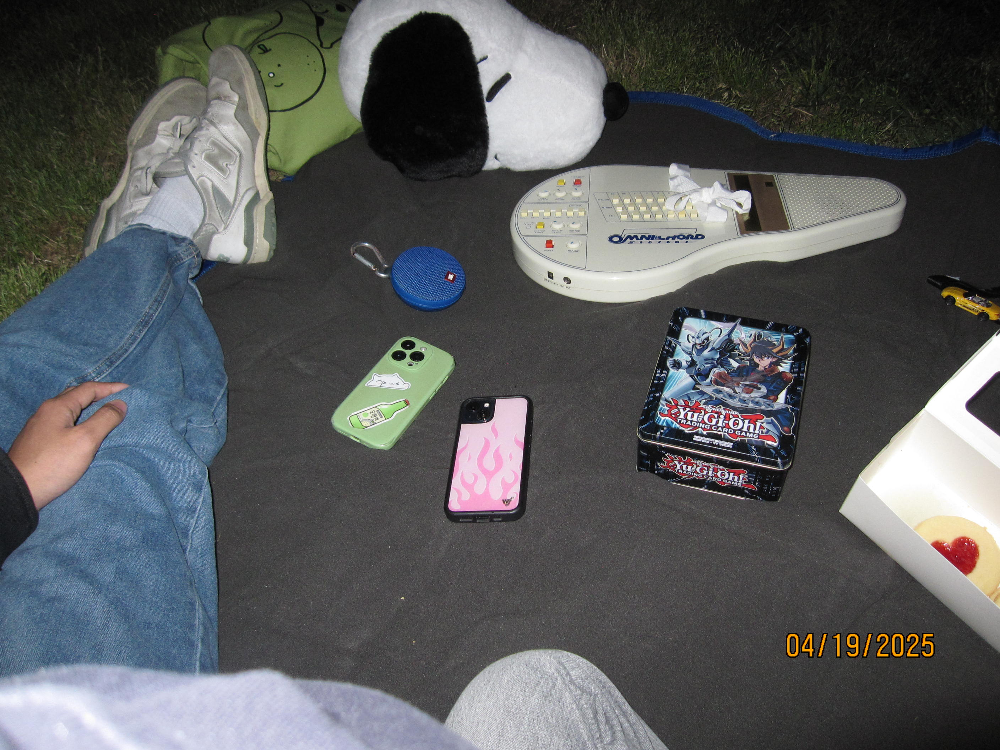
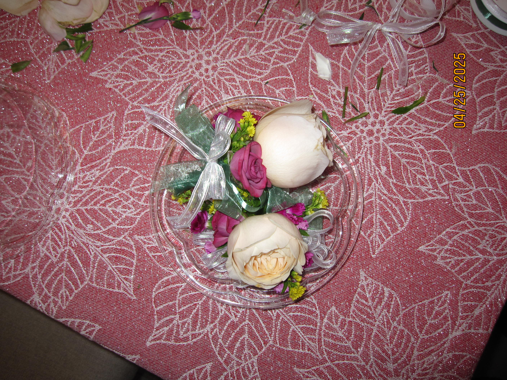
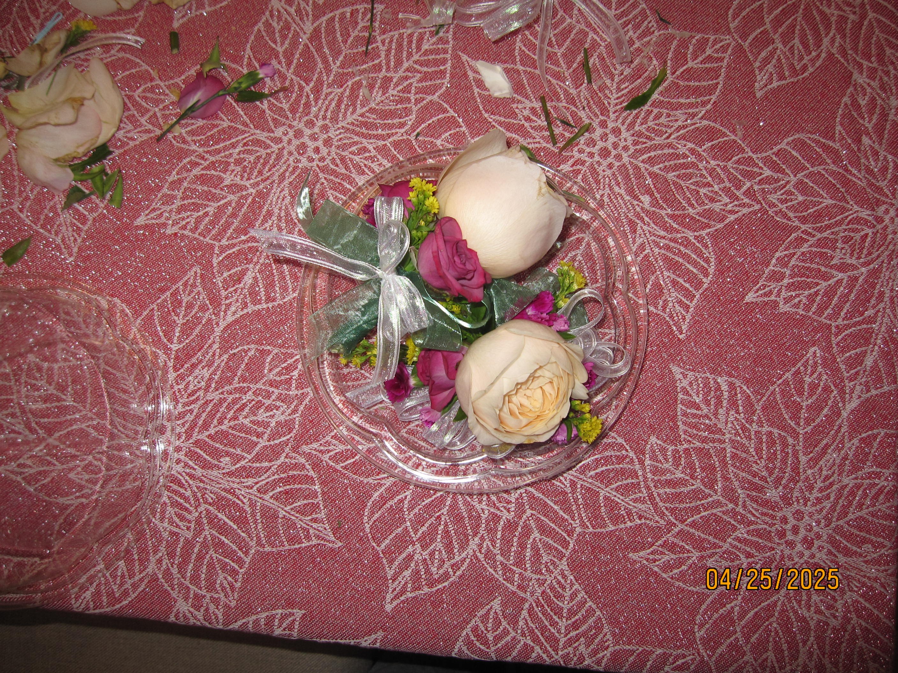
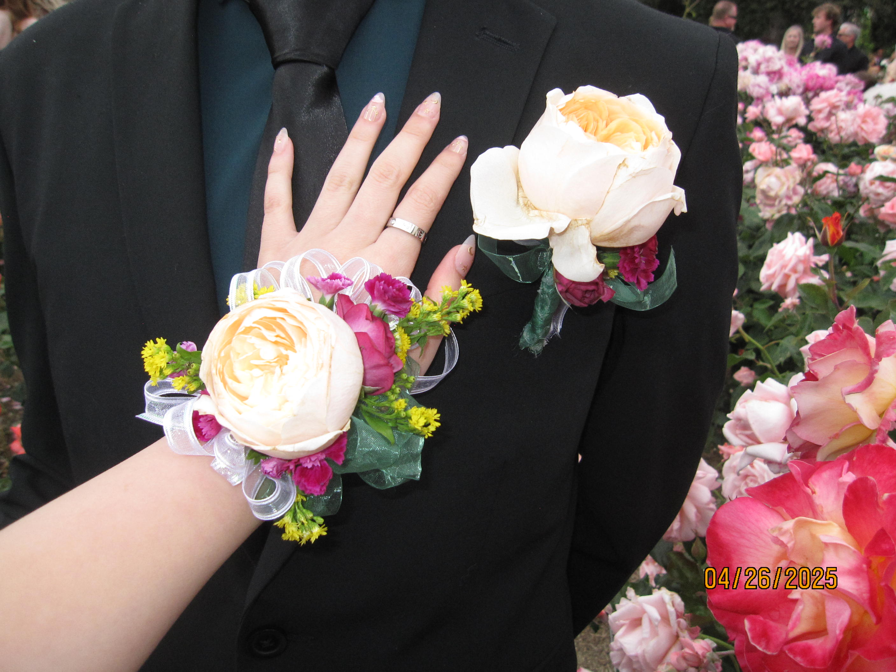
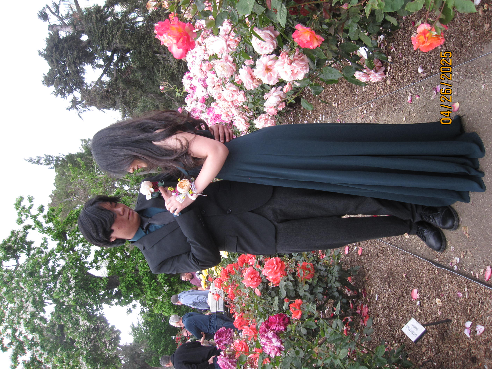

this is one of my all time favorite days ever. in the days and weeks before going stargazing with you this time, i was really crashing out because you hadn't asked me to be your girlfriend yet and i was okay with that except for the fact that i knew that you liked me and you knew that i liked you. i was SO happy when you asked later that night when i got back home i journaled this: "i went stargazing with jacob. he got me a big ass snoopy head and cookies and asked to be my boyfriend. life isn't real. my room smells like him and i hope it never ceases." lowkey hella cringe and like brain dead journal entry but the sentiment still remains today. also the picture is tough as fuck with the omnichord with the ribbon on it with the snoopy head, your speaker, my keys, and the cookies in the background.
okay i'm ngl i did not want to go to either of our proms ts just sounded hella overstimulating and not very fun... BUT i just loved being able to spend basically the entire day with you for one of the first times ever. you came over really early to make the corsage and boutonniere which was very very fun it was lowkey really stressful to arrange the flowers and they were heavy as fuck and we couldn't find the right pin to clip to your jacket but it all worked out! lowkey mid ahh day and mid ahh pictures i felt chopped because of my fuckass bangs BUT it was super fun to be with you and your friends and i got to admire you fitted up all day!
 so pretttyyyyyy
 